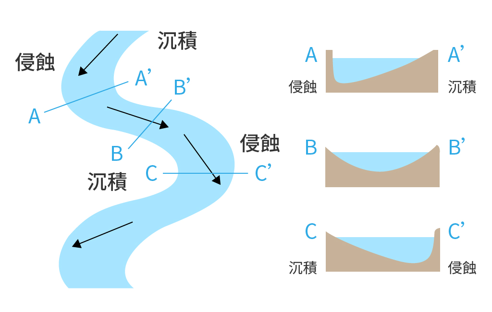

是冲積型河川的河床演變的重要因素之一。
不同類型土質的河岸有不同的沖刷方式，分為直接沖刷與間接沖刷兩類：
(一)、 直接沖刷：水流直接沖刷河岸，受到重力作用導致河岸崩塌（如下圖）。
(二)、 間接沖刷：非水流直接沖刷河岸所造成，而是其他外在因素長期間接影響造成，包括滲流作用、岸邊植被影響、凍融作用、土體濕化與脫水作用及河道內水位變化的影響。
滲流作用 seepage
指水在土壤中因毛細管作用或重力作用而移動的現象。
凍融作用 freeze and thaw action
冰對岩石裂隙兩壁產生巨大的壓力；而當氣溫回升冰融化時，加於岩石兩壁的壓力會驟減，岩石兩壁遂向中央推回。在反覆的凍結和融化過程中，岩石的裂隙就會擴大、增多，稱為凍融作用。
土壤濕化 Soil wetting
指土體體液容量的增加。
脫水作用 dehydration
指土體體液容量的減少。